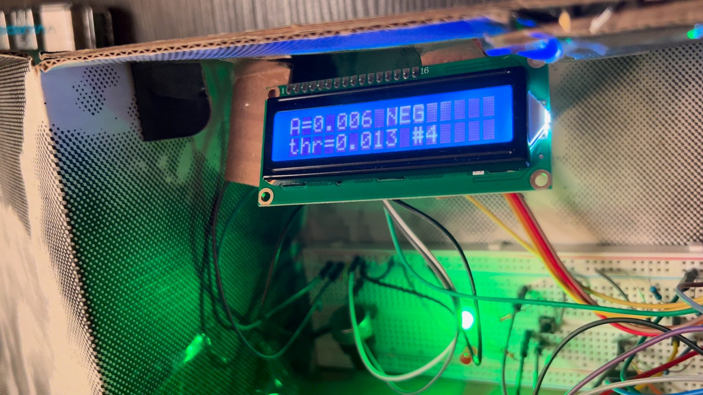
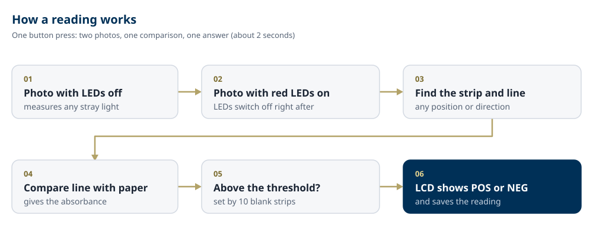
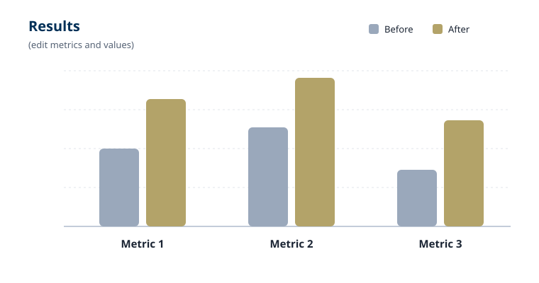

Discovery Project Feature
GlowBox
A low-cost reader for colorimetric test strips.
Overview
I built GlowBox, a low-cost reader that turns the line on a test strip into a number. It shines red light on the strip, photographs it with a Raspberry Pi camera, and measures how much darker the line is than the paper next to it. The LCD then shows that number and a simple POS or NEG.
On my prototype, every blank I tested read NEG and every marker line read POS. Most of the work was not the idea but making it reliable: seven engineering problems, from LED glare to a shadow that looked like a line, each solved mostly in software, so the device works without a laptop.
- Tools
- Raspberry Pi 4, Pi Camera Module 3, Python (about 1,400 lines), 650 nm red LED, IRLZ44N MOSFET, 16×2 LCD

The Problem
Test strips are everywhere: rapid infection tests, pregnancy tests, and food and water safety tests, including strips that detect bacteria such as E. coli. They are cheap and fast, and they share one weak point: a person has to look at the line and decide.
That works for a strong line. It breaks down for a faint one. Two people can look at the same strip and disagree, and the answer can change with room lighting, eyesight, or how tired someone is. Nothing gets written down either. Commercial strip readers solve this, but they are usually closed, single-brand devices.
My goal: build a low-cost, open reader that turns a test-strip line into an objective, recorded number, using parts a student team can buy and assemble.
The Process
The idea fits in one sentence: a coloured line soaks up light, so under the right light it looks darker than the paper around it, and how much darker tells you how much dye is there. GlowBox uses red light (650 nm), which blue, purple and black lines absorb strongly, and compares the line with the clean paper right next to it in the same photo:
absorbance = −log10(line brightness ÷ paper brightness)
If the line reflects the same light as the paper, absorbance is 0. If it reflects half as much, absorbance is about 0.3. The darker the line, the bigger the number.
GlowBox is a cardboard enclosure with two compartments: a dark measuring chamber on one side and the electronics on the other. A Raspberry Pi 4 runs the camera, does the maths and drives the display; a Raspberry Pi Camera Module 3 photographs the strip from about 15 cm above; a 650 nm red LED, diffused with paper, lights the strip from the side; and an IRLZ44N transistor lets the Pi switch the LED on and off. About 1,400 lines of Python start automatically when the device is powered on. An older Raspberry Pi 1 was used first as a test bench, so a wiring mistake could only damage the old board.

Seven engineering problems
The physics is simple; making it work reliably on a cardboard prototype was not. Most fixes ended up in software, so the device copes with an imperfect setup instead of needing a perfect one.
- The original plan needed a part I could not get. Detecting glowing dye needs an optical filter I did not have, so I switched to measuring how much light the line absorbs: a shadow, not a glow.
- The camera barely saw the LED. Switching it on changed the picture by only 2.5 out of 1,023. Re-aiming the LED and raising the exposure brought the strip to 42% of full scale, inside the 40–80% target.
- The code measured the wrong part of the picture. It now finds the strip by itself, so the strip can sit anywhere, in either direction.
- Glare and uneven light confused the strip finder. Bright glare spots are set aside, dim parts of the strip are joined back on, and paper in front of the LED spreads its light.
- Taking the strip out and back in changed the reading from 0.70 to 0.89. An L-shaped holder tightened re-inserted readings to 0.710–0.726, about 1%.
- A shadow looked like a line. The holder's edge made blank strips read about 0.52. Skipping the holder end and only accepting a line with clean paper on both sides dropped blanks to 0.0076.
- Tiny shiny spots blocked whole readings. Glossy ink reflected LED light like a mirror. Maxed-out pixels are now left out, and the dark line measured correctly (0.69).
The Outcome
With the final setup, every one of 15 readings was called correctly: all 9 blank readings came out NEG and all 6 line readings came out POS. Calibration on 10 blank strips gave an average of 0.0076 with a spread of 0.0013, which set the cut-off for POS at 0.0126 (average + 3 × spread). That means GlowBox flags a line that blocks only about 3% of the red light, fainter than most people can reliably see. The same unmoved strip measured twice read 0.7625 and 0.7629.

GlowBox is a prototype measurement tool, not a medical device. I tested marker lines, not real test strips; it reads one line, while real strips have a test line and a control line; and red light barely sees the red/pink lines many commercial tests use. Next steps, in order: a test/control line mode, green LEDs for red/pink-line strips, a dilution series to map the detection limit, real commercial strips with known amounts of bacteria, and a sturdier enclosure.
What I Learned
The hard part was not the idea but the details: glare, shadows, uneven light and shiny ink each broke the measurement in a different way. Solving them in software made the device tolerant of an imperfect, low-cost build, and that is what makes a reader like this practical to build and share.